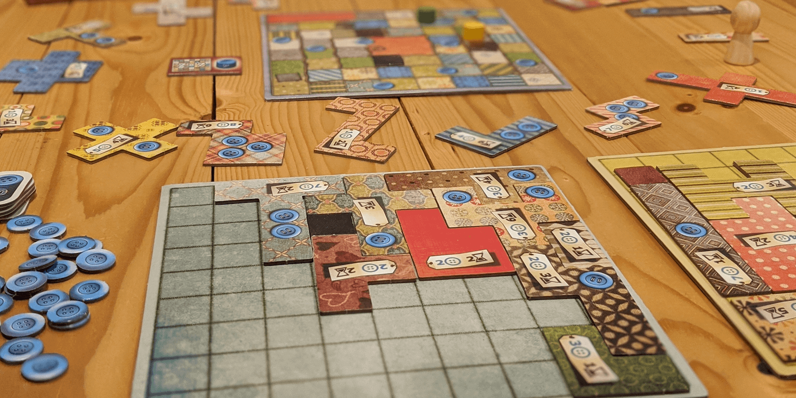
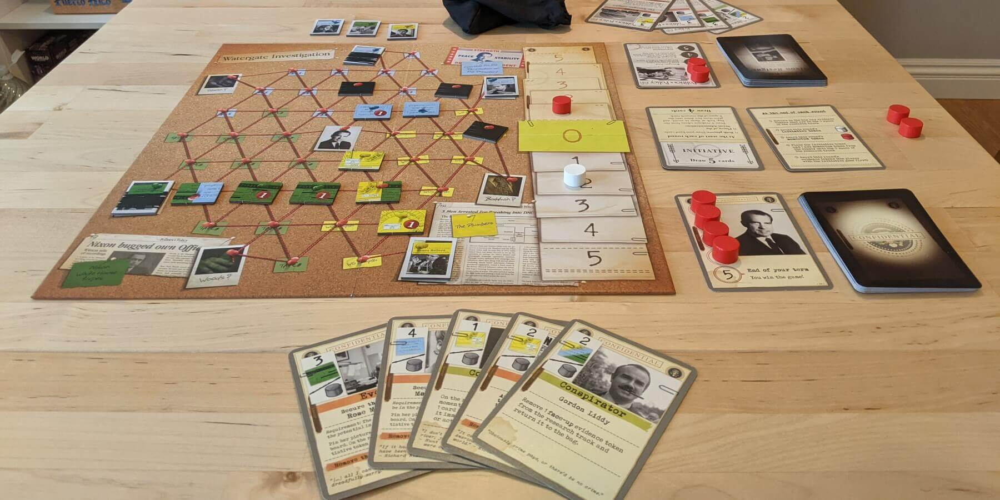
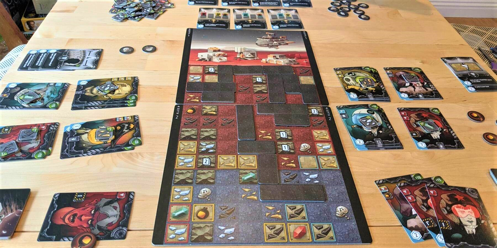
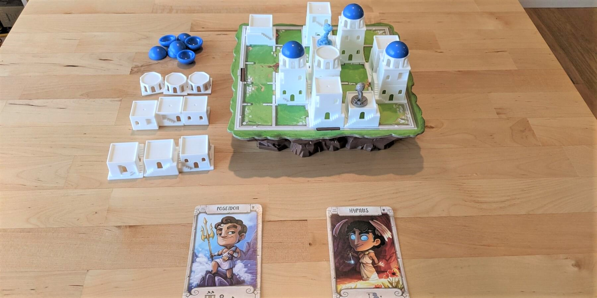

7 of The Best Board Games for 2 Players


Whether you're looking for board games that are good for couples or can't always get a big group together, two player games are the answer!
Some of the best strategy games are designed specifically for two players, and these board games feature interesting mechanics, quick turns, and tactical decision making. We have played all of these games many times and they are still fun and challenging.
1. Patchwork



Patchwork is all about sewing the best quilt by fitting together Tetris-shaped pieces in an optimal way. You and your opponent take turns choosing pieces to add to your board, but it can be quite tricky to do this perfectly without leaving holes!
Each piece costs buttons and time. Buttons are your money but are also your points, and time is a unique cost - if a piece costs 3 time, you move up the time track 3 spaces. You keep taking pieces until you pass your opponent on the time track, and you both will end on the same final space (and use the same amount of time for your quilts).
This game is easy to learn and set up, and it strikes a great balance between competitive strategy and solo puzzle. If you have enjoyed other games like Blokus or Fits in the past, Patchwork is a great game to play next!
Buy Patchwork on Amazon
2. 7 Wonders Duel
7 Wonders Duel is an engine-building card game set in the ancient era, when the wonders of the world were constructed. Even if you haven't played the original 7 Wonders, Duel stands on its own as a game with many strategies and ways to win the game.
Cards are laid out in a pattern with some overlapping others. On your turn, you may take any uncovered card and add it to your city. You need to be careful though - this may reveal a strong card that your opponent could take on their turn. The primary way to win is by having the most points, but anyone can win immediately through a military or science victory as well! This keeps the game interesting and is a good mechanic to keep the leading player in check.
7 Wonders Duel is well-balanced and the overlapping card layout adds a lot of depth to decision making. It captures the feel of the original game but is well tuned for a 2-player experience.
Buy 7 Wonders Duel on Amazon
3. Onitama
Onitama is a minimalist tactical strategy game that has its roots in Chess. You move your pawns and Emperor around the board, aiming to capture your opponent's Emperor. However, you can also win the game by moving your Emperor onto your opponent's Shrine space!
Each piece in Onitama does not have a movement pattern of its own, unlike Chess. Instead, 2 cards in front of you determine your available moves for that turn, and you may move any of your pieces following one of these patterns. Each time you use a pattern card, you slide it toward your opponent and take the other card. There are 5 total movement cards each game, and the rotation of these cards between turns creates the mind game and strategy of Onitama.
If you have enjoyed Chess in the past (or just want a great tactical game), Onitama offers a new type of strategy that changes depending on which 5 movement cards are dealt. This game also has a beautiful Japanese theme and comes in a nicely designed box with quality components.
Buy Onitama on Amazon
4. Watergate
Watergate is an asymmetric card game set during the Nixon presidency of the United States. One player uses Nixon's deck and tries to cover up the Watergate scandal. The other player uses The Washington Post's deck and aims to collect enough evidence to implicate Nixon.
You take turns playing cards to try and secure evidence and collaborators. As the Post, you place evidence face-up, creating evidence trails leading toward Nixon. Nixon, however, places evidence face-down on its redacted side, blocking the Post's paths! Some cards also have powerful "events" on them, which may allow you to remove evidence or even end a round immediately. It's tempting to hold on to your best cards for the opportune moment, but don't miss your chance!
Watergate feels like a strategic tug-of-war, and it's difficult to nail down a perfect strategy. If you enjoy making calculated gambles or are interested in games where each player's objective is different, this is a great choice.
Buy Watergate on Amazon
5. Super Motherload
Super Motherload is a deck-building and tile-laying game with a fun mineral excavation theme. Based on a 2004 flash game, Super Motherload is a hidden gem among strategy board games.
You start out on the surface with only your base deck of cards. On your turn, you may discard matching cards from your hand to drill tunnels that progress deeper underground. If you drill through any minerals, you can use these to unlock new cards to add to your deck.
The strategy of this game comes from the fact that all tunnels are shared! Rather than moving a vehicle around, you simply branch tunnels off of the existing tunnel system. You may want to drill into an area with valuable resources, but this also opens up new paths for your opponent.
If you want a challenging game that is easy to learn and set up (thanks to an excellent rulebook), Super Motherload is a great choice. Collecting minerals and digging tunnels is also just very satisfying and adds to the fun!
Buy Super Motherload on Amazon
6. Santorini
You and your opponent will construct the blue-domed city of Santorini, playing as greek gods with special powers. Most board games are played on a flat game board, but in Santorini, you get to climb to higher levels using the structures you build!
On your turn, you get to build sections of a tower. You may either add a tower base to an empty space on the board, or you may build the next section of an existing tower. You then may move around the board, and can jump up or down a level on an adjacent space. Your goal is to stand on the topmost space of a completed tower (3 stories tall)! However, other players can add a blue dome to "cap" off a building on their turn, preventing you from standing on it!
This game is full of mind games, blocking, and abstract strategy. Your god's special ability also adds asymmetry to each game of Santorini, and you'll have a new one each game to increase replayability.
Buy Santorini on Amazon
7. My City
My City is a tile-laying legacy game where you place Tetris-shaped buildings to develop your city. Legacy games evolve each time you play them, and in this case, you add stickers to your board to reveal new features and add new buildings to your supply of pieces.
Each turn, a card is drawn from the deck, and this card shows the piece ALL players must place on their boards. Each player's board will end up looking very different, as everyone will have different objectives based on where they placed their legacy stickers. Points are scored in multiple ways, such as from contiguous groups of buildings of the same color, buildings touching wells, and more. Even the scoring rules will change after multiple chapters!
My City is an awesome legacy game that is fun to play whether back to back, or weekly over a few months. As a bonus, this game plays well for 3 or 4 players as well, and it's possible to play a non-campaign game with other friends by flipping your board over to its neutral side.
Buy My City on Amazon
Some other fun games that didn't make our top picks for 2 players were Unmatched, Jaipur, and Lost Cities. Unmatched is a tactical combat card game with characters like Alice in Wonderland and Bigfoot. Jaipur is a goods-trading game with camels. Lost Cities is a great introductory card game with some push-your-luck mechanics.
Heavier Strategy Games for 2 Players
If you're looking for heavier strategy games that play well with 2 players, we've also got you covered! The following games have a ton of depth and will require 2 to 3 hours to complete. Almost any heavy Euro game can be played with just 2 players, but these are our favorites.
Terraforming Mars is an engine building game where you compete to be the best terraforming corporation. All players work to increase the oxygen level, temperature, and ocean coverage of Mars, and the game ends when all of these are brought to a habitable level. However, each player will try to accomplish this in an entirely different way, as there are hundreds of unique cards and many ways to score points! Excellent for 2, 3, or 4 players.
Buy Terraforming Mars on AmazonIn Great Western Trail, you'll be traveling along a trail of buildings to Kansas City, where you will deliver cow cards for a profit. The trail evolves each time you make a delivery however, as players can add buildings with various effects on them. This game is hard to figure out as it will feel very different each time you play, and mastering the subtle deck-building aspect is a real challenge. Excellent for 2, 3, or 4 players.
Buy Great Western Trail on AmazonA Feast for Odin is a Viking-themed game that pretty much has...everything. At its core, it's a worker placement game. You can focus on hunting, combat, crafting, exploration, or even animal breeding. But you do all of this to accumulate goods tiles of varying shapes which you fit together on numerous boards like a swiss-cheese Tetris puzzle. And you do this because these boards generate money and more goods that can be used to take more actions and get more goods that can be used to do more Tetris which can give you more goods which gives more income and goods and animals and...yeah. This game is a ton of puzzling and strategy fun, but it does take about 3 hours to play (even after learning and setup). We promise it's worth it if you're not scared off by now! Excellent for 2, or 3 players. 4 might just be a lot, but we haven't tried.
Buy A Feast for Odin on AmazonMaracaibo takes you to the 17th century Caribbean, where you'll sail around and hire assistants, complete quests, and gain influence with colonial France, England, and Spain. There are so many ways to build an engine and score points, and the tiles on the board change each game, so you'll need to change your strategy accordingly. This can also be played as a legacy game, which means the board and available cards evolve between plays as the story progresses. Excellent for 2, 3, or 4 players.
Buy Maracaibo on AmazonOrléans is a bag-building game - you will be pulling workers out of a bag in order to perform various actions on your board. Each action costs a different combination of workers, and some actions let you add more workers to your bag, while some give you other bonuses. You can focus on growing your presence on the map, generating points from buildings, or just accumulating goods - you will have to see what will work each game! Excellent for 2, 3, or 4 players.
Buy Orléans from Capstone GamesGrand Austria Hotel is a hotel management game where you must serve guests in your dining room before moving them into an available rooms. This is no easy feat though as rolled dice govern the actions available each round, and these dice are shared between players! You may need to make cake and coffee to serve your guests, but your opponent may snatch that die from you! However, there is often another way to do what you want, be it hiring staff, opening new rooms, or gaining favor with the Emperor. Excellent for 2. In 3 or 4 player, it's much harder to plan ahead in a satisfying way.
Buy Grand Austria Hotel from Game KastleDid we miss any good recommendations? Have other feedback for us? Send us an email at support@spiralburst.com and let us know!